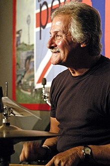
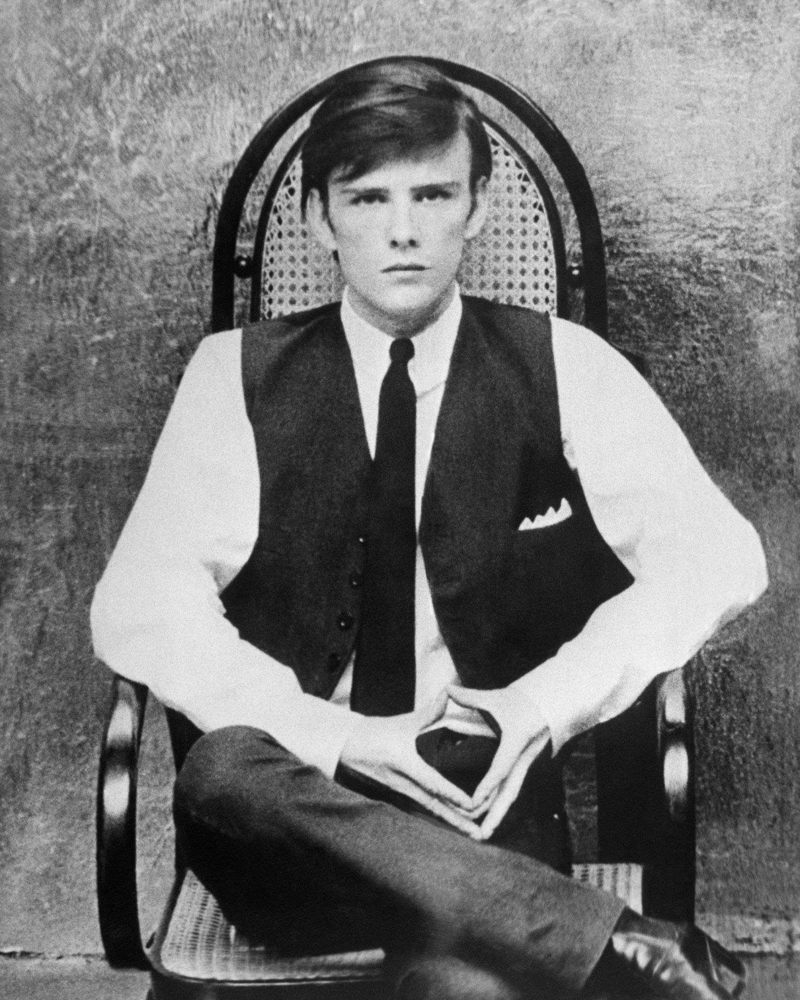

Foști membri
Pete Best

Randolph Peter Best (născut Scanland; născut la 24 noiembrie 1941) este un muzician englez care a fost toboșarul trupei Beatles între 1960 și 1962. A fost concediat imediat înainte ca trupa să atingă faima mondială și este una dintre cele câteva persoane care au fost numite al cincilea Beatle.Mama lui Best, Mona Best (1924-1988), a deschis Casbah Coffee Club în pivnița casei familiei Best din Liverpool. The Beatles (la acea vreme cunoscuți sub numele de Quarrymen) au susținut unele dintre primele lor concerte în acest club. The Beatles l-au invitat pe Best să se alăture trupei la 12 august 1960, în ajunul primului sezon de concerte în cluburi din Hamburg al grupului. Ringo Starr l-a înlocuit în cele din urmă pe Best la 16 august 1962, când managerul grupului, Brian Epstein, l-a concediat pe Best la cererea lui John Lennon, Paul McCartney și George Harrison după prima sesiune de înregistrări a trupei. Peste 30 de ani mai târziu, Best a primit o plată importantă în bani pentru munca sa cu Beatles după lansarea compilației din 1995 a primelor lor înregistrări, Anthology 1; Best a cântat la tobe pe 10 dintre piesele albumului, inclusiv la audițiile Decca.
După ce a lucrat în mai multe grupuri fără succes comercial, Best a renunțat la activitatea în industria muzicală pentru a lucra ca funcționar public timp de 20 de ani înainte de a înființa Pete Best Band.
Stuart Sutcliffe

Stuart Fergusson Victor Sutcliffe (23 iunie 1940 - 10 aprilie 1962) a fost un pictor și muzician britanic, cunoscut mai ales ca fiind chitaristul basist original al trupei Beatles. Sutcliffe a părăsit trupa pentru a-și continua cariera de pictor, după ce anterior urmase cursurile Colegiului de Artă din Liverpool. Sutcliffe și John Lennon sunt creditați cu inventarea numelui "Beetles" (sic), deoarece ambilor le plăcea trupa lui Buddy Holly, The Crickets. De asemenea, aveau o fascinație pentru numele de grup cu dublu sens (cum ar fi Crickets, de exemplu, cuvântul referindu-se atât la o insectă, cât și la un sport), așa că Lennon a inventat apoi "The Beatles", de la cuvântul beat (deși ortografia inițială a lui Lennon era "Beatals"). Ca membru al grupului atunci când acesta era format din cinci membri, Sutcliffe este unul dintre cei câțiva care sunt numiți uneori "al cincilea Beatle".Când a cântat cu Beatles la Hamburg, a cunoscut-o pe fotografa Astrid Kirchherr, cu care s-a logodit mai târziu. După ce a părăsit trupa Beatles, s-a înscris la Colegiul de Artă din Hamburg, unde a studiat cu viitorul artist pop Eduardo Paolozzi, care mai târziu a scris un raport în care a afirmat că Sutcliffe a fost unul dintre cei mai buni studenți ai săi. Sutcliffe a primit alte laude pentru picturile sale, care explorau în principal un stil înrudit cu expresionismul abstract.
În timp ce studia în Germania de Vest, Sutcliffe a început să sufere de dureri de cap intense și să se confrunte cu o sensibilitate acută la lumină. În februarie 1962, s-a prăbușit în mijlocul unei clase de artă după ce s-a plâns de dureri de cap. Medicii germani au efectuat teste, dar nu au reușit să determine o cauză. După ce s-a prăbușit din nou la 10 aprilie 1962, Sutcliffe a fost dus la un spital, dar a murit pe drum în ambulanță. Cauza morții a fost descoperită ulterior ca fiind o hemoragie cerebrală - o sângerare severă în ventriculul drept al creierului său.